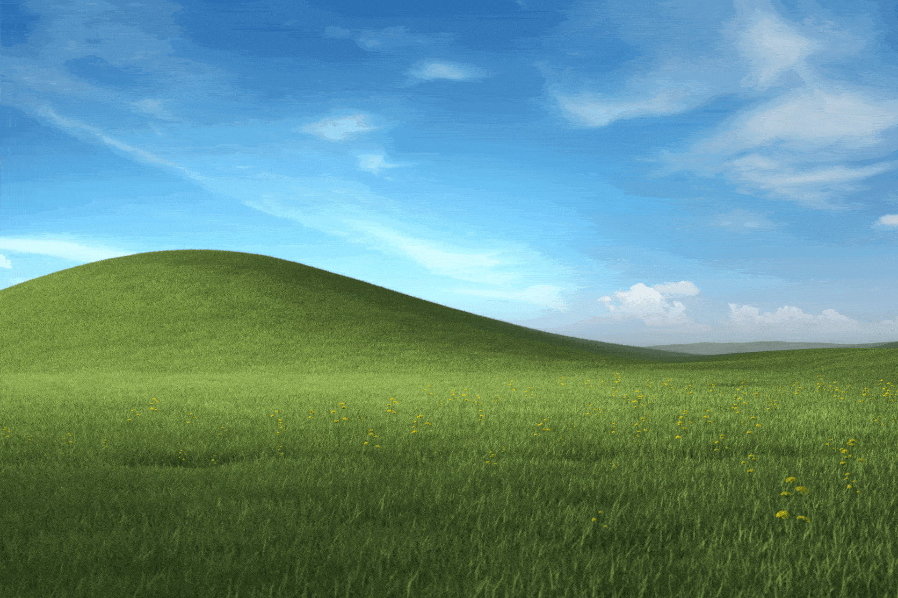
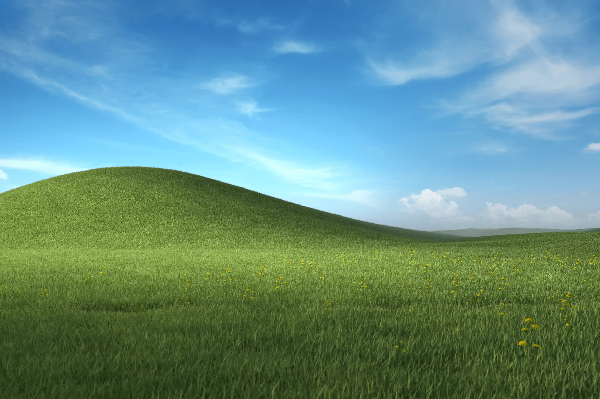

Qualitat: LOW

Qualitat: MEDIUM

Qualitat: HIGH

Imatge amb WEBP
Imatge amb AVIf

Format òptim: El format JPEG és el més adequat per a fotografies de paisatges, ja que ofereix un bon equilibri entre compressió i qualitat visual. En imatges amb molts detalls, com els cels o herba, aquest format manté una qualitat acceptable amb un pes relativament baix.
Es podria reduir encara més la mida? Perdria qualitat?: Sí, es pot reduir ajustant el nivell de compressió, però compressions altes (com en la imatge LOW) poden provocar una pèrdua significativa de detalls, amb artefactes visibles en transicions suaus, com el cel o les ombres. La compressió moderada (MEDIUM) és una opció equilibrada per mantenir la qualitat.
Format PNG: Tot i que el format PNG conserva tots els detalls sense pèrdua de qualitat, no és ideal per a paisatges a causa del seu gran pes, que pot ser innecessari per a fotografies amb gradients complexos.
Format GIF: El format GIF redueix dràsticament la paleta de colors, fent-lo inadequat per a paisatges realistes amb transicions subtils, com cels o herba.